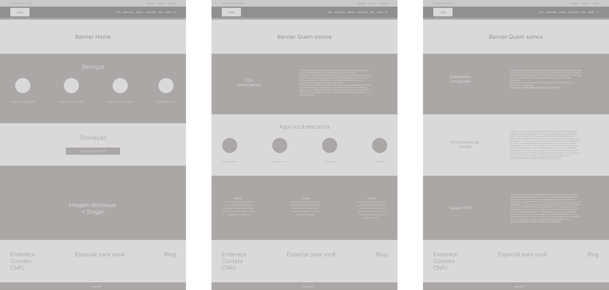

Aqui Empréstimo
Metodologia utilizada
Este case foi feito com base no processo do Duplo Diamante, na prática, é uma metodologia do Design Thinking. Sendo um processo com a finalidade de entregar para o usuário uma possível solução que se encaixe a sua necessidade. Para isso, ela é desenvolvida em cima do levantamento das inúmeras hipóteses e problemas.
Case feito para uma empresa de empréstimo consignado e empréstimo pessoal atuando como correspondente oficial dos melhores bancos do Brasil.

Problemas iniciais
O que é o empréstimo consignado?
É um tipo de empréstimo em que a prestação mensal é descontada diretamente da folha de pagamentos. Até então, era destinado a aposentados e pensionistas do Instituto Nacional do Seguro Social (INSS), trabalhadores com carteira assinada e servidores públicos. Mas uma medida provisória do governo autorizou a concessão deste tipo de empréstimo, também, aos beneficiários de programas sociais.
O que é o empréstimo pessoal?
Também conhecido como “crédito pessoal”, é uma opção geralmente oferecida por
bancos, fintechs e financeiras.
A escolha mais indicada para diferentes necessidades, como:
Pagamento de dívidas;
Compras de alto valor;
Investimentos;
Viagens;
E muito mais!
Hipóteses
Quem são esse público-alvo e onde conseguem estes tipos de serviços?
- São aponsentados, pensionistas, pessoas de idades avançadas que precisam quitar dívidas.
- Pessoas jovens que necessitam de um empréstimo para fazer investimentos em algum empreendimento.
- O Brasil tem altos índices de inadimplências. Fogem de burocracias e buscam prestadores que possuem mais engajamento e credibilidade para auxiliarem eles em todo esse processo burocrático.
Pesquisa qualitativa
Você tem interesse em pedir um empréstimo para investir em algum sonho?
"Sim, vejo que é uma forma interessante, quando existe um planejamento em algo que você acredita."
Você já pegou algum empréstimo para quitar alguma dívida?
"Sim, era uma dívida que precisava ser paga com urgência e optei por pedir um empréstimo no meu banco."
Você compreende como funciona taxas e os processos burocráticos ao solicitar empréstimos?
"Muito pouco, busco entender o básico só para não entrar em uma furada grande."
Com base nos dados levantados, nota-se que existe um interesse por empréstimos no Brasil, mas sabemos que existe um gap muito grande ao entender sobre leis, regulamentos, taxas e demais burocracias no Brasil. E com altos índices de inadimplências no país, sabemos que muito desses dados tem relação com os mais de 60 milhões de brasileiros endividados, então, para prestar esses serviços é necessária muita transparência, ética e credibilidade.
Sitemap
Baseado nas informações coletadas nas entrevistas, pesquisas e benchmark.
Wireframe
Esboço com finalidade de organizar as informações e validar com o cliente antes de seguir para o protótipo. Baseado em todas as etapas anteriores, conforme as necessidades do cliente e dos dados levantados.
